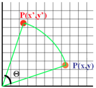
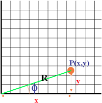
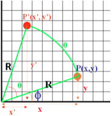
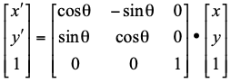

-
A rotation of an object is used to rotate an object in either clockwise or anticlockwise direction.
-
A rotation repositions all points of an object along a circular path in the plane centered at the origin or arbitrary point.
-
The rotation transformation is needed to manipulate the initial object coordinate and display the modified object coordinate with the help of rotation angle (Ɵ) ,with respect to the origin or the arbitrary point as shown in figure below:

-
Consider a point P(x,y) is rotated in anticlockwise direction by an angle ‘Ɵ’. The point P(x,y) is represented as

x = R * cos f
y = R * sin f
-
The Point P’(x’,y’) after performing the rotation in anticlockwise direction by an angle ‘Ɵ’ is represented as

x’ = x * cos q – y * sin q
y’ = x * sin q + y * cos q
-
The Point P(x,y) is rotated in clockwise direction by an angle ‘Ɵ’, then replace ‘Ɵ’ by ’- Ɵ’; and simplify the equation.
-
Rotation transformation can be performed :
-
About the origin :
If the point p (x,y) is rotated about origin with an angle ‘Ɵ’ in anticlockwise direction; then we can write the coordinate of P’(x’,y’) as:
x’ = x * cos q – y * sin q
y’ = x * sin q + y * cos q
-
About an arbitrary point P (px,py) :
To perform the rotation about the arbitrary point ‘P’ we have to follow the steps listed below.
-
Translate the 2-D object so that arbitrary point ‘P’ will coincide with the origin, by performing the translation transformation with translation factor T(-px, -py)
-
Rotate the object with respect to origin, with rotation angle ‘Ɵ’ in either clockwise or anticlockwise direction respectively.
-
Inverse Translate the object with respect to the arbitrary point ‘P’ by performing translation transformation with translation factor T(px,py)
-
Rotation can be represented with the use of Homogenous coordinate system using matrix representation as

where, P(x ,y) coordinate will be rotated to P’(x’, y’) with respect to the angle ‘Ɵ’; in anticlockwise direction.